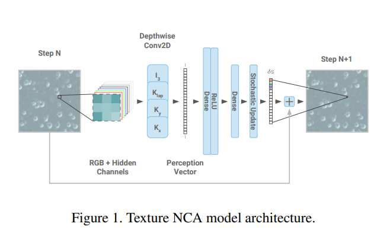
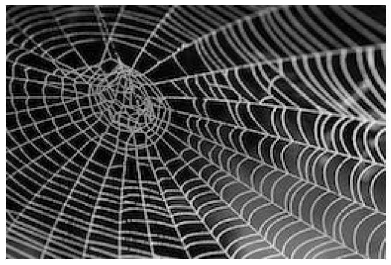
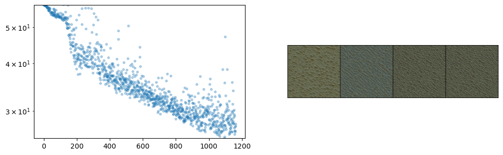
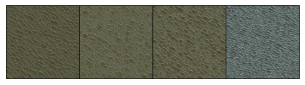
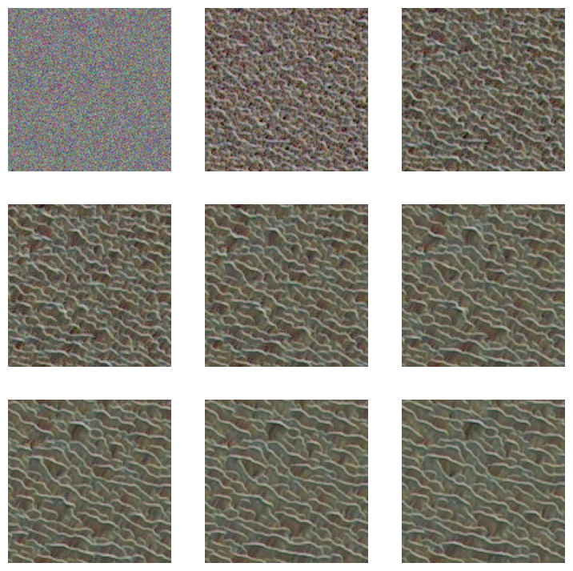

import pickle,gzip,math,os,time,shutil,torch,random,timm,torchvision,io,PIL, einops
import fastcore.all as fc,matplotlib as mpl,numpy as np,matplotlib.pyplot as plt
from collections.abc import Mapping
from pathlib import Path
from operator import attrgetter,itemgetter
from functools import partial
from copy import copy
from contextlib import contextmanager
import torchvision.transforms.functional as TF,torch.nn.functional as F
import torchvision.transforms as trans
from torchvision import transforms
from torch import tensor,nn,optim
from torch.utils.data import DataLoader,default_collate
from torch.nn import init
from torch.optim import lr_scheduler
from torcheval.metrics import MulticlassAccuracy
from datasets import load_dataset,load_dataset_builder
from fastcore.foundation import L, store_attr
from fastAIcourse.datasets import *
from fastAIcourse.conv import *
from fastAIcourse.learner import *
from fastAIcourse.activations import *
from fastAIcourse.init import *
from fastAIcourse.sgd import *
from fastAIcourse.resnet import *Setup 2
- skip_showdoc: true
Background: Neural Cellular Automata
A cellular automaton is a discrete model that consists of a grid of cells, each of which can be in one of a finite number of states. The cells are updated simultaneously based on a set of rules that determine the state of a cell based on the states of its neighbors.
Cellular automata are often used to model complex systems and can exhibit emergent behavior, meaning that patterns and behaviors emerge from the interactions of the individual cells even though the rules governing their behavior are simple.
Classic examples such as the famous ‘Game of Life’ have very simple rules and limit states to ‘alive’ or ‘dead’. However, the ideas can be extended to continuous outputs for each cell, and the update ‘rule’ can be a small neural network rather than a hard-coded decision tree - giving us ‘Neural Cellular Automata’.
Here’s what our NCA will look like:

Key references: - Growing Neural Cellular Automata - A delightful paper that was my intro to the topic - Texture Generation with NCA - tiny models making amazing textures, the paper we’re replicating today. - ‘The Future of Artificial Intelligence is Self-Organizing and Self-Assembling’ - More general discussion of this space - Fixing Neural CA Colors with Sliced Optimal Transport - A follow-on video from Alexander Mordvintsev (include code for a different style loss) - Fun with Neural Cellular Automata - My W&B report with lots of examples
Goal: Match This Style with an NCA
def download_image(url):
imgb = fc.urlread(url, decode=False)
return torchvision.io.decode_image(tensor(list(imgb), dtype=torch.uint8)).float()/255.
url = "https://images.pexels.com/photos/34225/spider-web-with-water-beads-network-dewdrop.jpg?w=256"
style_im = download_image(url).to(def_device)
show_image(style_im);
Style Loss (see 17A):
vgg16 = timm.create_model('vgg16', pretrained=True).to(def_device).features
normalize = trans.Normalize(mean=[0.485, 0.456, 0.406], std=[0.229, 0.224, 0.225])
def calc_features(imgs, target_layers=[18, 25]):
x = normalize(imgs)
feats = []
for i, layer in enumerate(vgg16[:max(target_layers)+1]):
x = layer(x)
if i in target_layers:
feats.append(x.clone())
return feats
# Batched version of the previous notebook's gram matrix function
def calc_grams(img, target_layers=[1, 6, 11, 18, 25]):
return L(torch.einsum('bchw, bdhw -> cd', x, x) / (x.shape[-2]*x.shape[-1])
for x in calc_features(img, target_layers))
class StyleLossToTarget():
def __init__(self, target_im, target_layers=[1, 6, 11, 18, 25]):
fc.store_attr()
with torch.no_grad(): self.target_grams = calc_grams(target_im[None], target_layers)
def __call__(self, input_im):
return sum((f1-f2).pow(2).mean() for f1, f2 in
zip(calc_grams(input_im, self.target_layers), self.target_grams))style_loss = StyleLossToTarget(style_im)
style_loss(torch.rand(1, 3, 256, 256).to(def_device))tensor(1175.81, device='cuda:0', grad_fn=<AddBackward0>)Defining the NCA model
num_channels = 4
hidden_n = 8def make_grids(n, sz=128): return torch.zeros(n, num_channels, sz, sz).to(def_device)# Hard-coded filters
filters = torch.stack([
tensor([[0.0,0.0,0.0],[0.0,1.0,0.0],[0.0,0.0,0.0]]),
tensor([[-1.0,0.0,1.0],[-2.0,0.0,2.0],[-1.0,0.0,1.0]]),
tensor([[-1.0,0.0,1.0],[-2.0,0.0,2.0],[-1.0,0.0,1.0]]).T,
tensor([[1.0,2.0,1.0],[2.0,-12,2.0],[1.0,2.0,1.0]])
]).to(def_device)def perchannel_conv(x, filters):
'''filters: [filter_n, h, w]'''
b, ch, h, w = x.shape
y = x.reshape(b*ch, 1, h, w)
y = F.pad(y, [1, 1, 1, 1], 'circular') # << Note pad mode
y = F.conv2d(y, filters[:,None])
return y.reshape(b, -1, h, w)x = make_grids(1)
model_inputs = perchannel_conv(x, filters)
model_inputs.shapetorch.Size([1, 16, 128, 128])# Brain: linear layer style
brain = nn.Sequential(
nn.Linear(num_channels*4, hidden_n),
nn.ReLU(),
nn.Linear(hidden_n, num_channels, bias=False)
).to(def_device)
model_inputs_flat = einops.rearrange(model_inputs, 'b c h w -> (b h w) c') # (1*128*128, 16)
brain_preds = brain(model_inputs_flat).reshape(x.shape)
brain_preds.shapetorch.Size([1, 4, 128, 128])[p.shape for p in brain.parameters()][torch.Size([8, 16]), torch.Size([8]), torch.Size([4, 8])]# Brain: conv style
brain = nn.Sequential(
nn.Conv2d(num_channels*4, hidden_n, 1),
nn.ReLU(),
nn.Conv2d(hidden_n, num_channels, 1, bias=False)
).to(def_device)
brain_preds = brain(model_inputs).reshape(x.shape)
brain_preds.shapetorch.Size([1, 4, 128, 128])[p.shape for p in brain.parameters()][torch.Size([8, 16, 1, 1]), torch.Size([8]), torch.Size([4, 8, 1, 1])]Putting this into a class, with a few extra features: - Random update: only update ~50% of the cells - to_rgb function to scale and show the first 3 channels as an RGB image - An option to zero out the weights of the second layer. Think: why is this useful?
class SimpleCA(nn.Module):
def __init__(self, zero_w2=True):
super().__init__()
self.w1 = nn.Conv2d(num_channels*4, hidden_n, 1)
self.relu = nn.ReLU()
self.w2 = nn.Conv2d(hidden_n, num_channels, 1, bias=False)
if zero_w2: self.w2.weight.data.zero_()
def forward(self, x, update_rate=0.5):
y = perchannel_conv(x, filters) # Apply the filters
y = self.w2(self.relu(self.w1(y))) # pass the result through our 'brain'
b, c, h, w = y.shape
update_mask = (torch.rand(b, 1, h, w).to(x.device)+update_rate).floor() # Random update
return x+y*update_mask
def to_rgb(self, x):
return x[...,:3,:,:]+0.5Training
class LengthDataset():
def __init__(self, length=1): self.length=length
def __len__(self): return self.length
def __getitem__(self, idx): return 0,0
def get_dummy_dls(length=100):
return DataLoaders(DataLoader(LengthDataset(length), batch_size=1),
DataLoader(LengthDataset(1), batch_size=1))class NCAProgressCB(ProgressCB):
def after_batch(self, learn):
learn.dl.comment = f'{learn.loss:.3f}'
if not (hasattr(learn, 'metrics') and learn.training): return
self.losses.append(learn.loss.item())
mbar = self.mbar
if not hasattr(mbar, 'graph_fig'):
mbar.graph_fig, mbar.graph_axs = plt.subplots(1, 2, figsize=(12, 3.5))
mbar.graph_out = display(mbar.graph_fig, display_id=True)
# Update preview image every 64 iters
if (len(self.losses))%64 != 10: return
# Plot losses:
mbar.graph_axs[0].clear()
mbar.graph_axs[0].plot(self.losses, '.', alpha=0.3)
mbar.graph_axs[0].set_yscale('log')
mbar.graph_axs[0].set_ylim(tensor(self.losses).min(), self.losses[0])
# Show preview images:
rgb = learn.model.to_rgb(learn.preds.detach()).clip(0, 1)
show_image(torchvision.utils.make_grid(rgb), ax=mbar.graph_axs[1])
# Update graph
mbar.graph_out.update(mbar.graph_fig)class NCACB(TrainCB):
order = DeviceCB.order+1
def __init__(self, ca, style_img_tensor, style_loss_scale=0.1, size=256,
step_n_min=32, step_n_max=96, batch_size=4):
fc.store_attr()
with torch.no_grad(): self.pool = make_grids(256, sz=size) # Set up a 'pool' of grids
def predict(self, learn):
# Pick some random samples from the pool
batch_idx = torch.randint(0, len(self.pool), (self.batch_size,))
x = self.pool[batch_idx]
# occasionally zero out some samples
if torch.randint(8, (1,)) < 1:
x[:1] = make_grids(1, sz=self.size)
# Apply the model a number of times
for _ in range(torch.randint(self.step_n_min, self.step_n_max, (1,))):
x = learn.model(x)
# Update pool
with torch.no_grad(): self.pool[batch_idx] = x
# and store preds
learn.preds = x
def get_loss(self, learn):
style_loss = learn.loss_func(learn.model.to_rgb(self.learn.preds))
overflow_loss = (learn.preds-learn.preds.clamp(-1.0, 1.0)).abs().sum()
learn.loss = overflow_loss + style_loss*self.style_loss_scale
def backward(self, learn):
learn.loss.backward()
# Gradient normalization:
for p in learn.model.parameters():
p.grad /= (p.grad.norm()+1e-8)
def before_fit(self, learn): self.learn=learnmodel = SimpleCA().to(def_device)
cbs = [NCACB(model, style_im), NCAProgressCB(), MetricsCB()]
style_loss = StyleLossToTarget(style_im)
learn = Learner(model, get_dummy_dls(1200), style_loss, lr=1e-3, cbs=cbs, opt_func=torch.optim.Adam)learn.fit(1)| loss | epoch | train |
|---|---|---|
| 1972.588 | 0 | train |
| 25.787 | 0 | eval |

# Check out the final batch:
rgb = model.to_rgb(learn.preds.detach())
rgb = torchvision.utils.make_grid(rgb)
show_image(rgb.clip(0, 1));
# Apply a numbe of times to a random initial starting grid:
images = []
x = torch.randn(1, num_channels, 128, 128).to(def_device) * 0.1
for i in range(900):
x = model(x)
if i%100==0: images.append(model.to_rgb(x)[0].clip(0, 1))
show_images(images)
sum(p.numel() for p in model.parameters()) # !!168